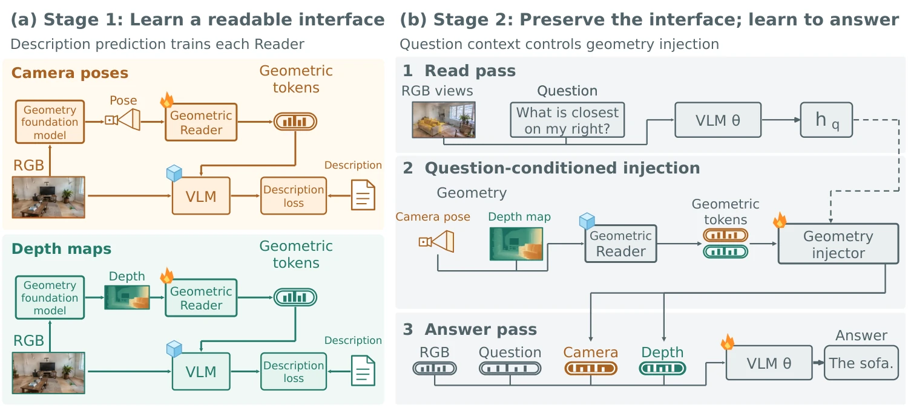

GeoReader: Learning Latent Geometry for Spatial Reasoning in Vision-Language Models
Geometry foundation models can recover 3D structure from images. GeoReader learns to express that structure as geometric tokens a vision-language model can interpret, then use to answer spatial questions.
Vision-language models (VLMs) struggle with metric and multi-view relationships that remain implicit in RGB observations. Geometry foundation models recover this structure from RGB, but existing methods either fuse the estimated features with visual tokens and learn to use them from question answering alone, or align VLM latents with geometry features. Capturing geometry, however, does not ensure its use: zeroing the aligned latents of a released feature-alignment model leaves its accuracy unchanged. We introduce GeoReader, a framework that learns geometric representations for the VLM that reads them. First, we train lightweight Geometric Readers to produce continuous input tokens, supervising them with geometry descriptions decoded by a frozen VLM, so that the Readers express geometry in a form the target model can already read. We then freeze the Readers to preserve this interface while fine-tuning the VLM on spatial QA, with geometry injection conditioned on the question. Geometry descriptions serve only as training targets: at inference, the VLM answers directly from the continuous geometric tokens without generating a geometry chain of thought. With geometry predicted from RGB images, GeoReader reaches 94.3 on MindCube-Tiny with Qwen3-VL-4B and, with a multi-source QA mixture, an average of 72.5 across six additional spatial benchmarks with Qwen3.5-9B. These results suggest that the most useful geometric representation is the one the receiving model can use, not necessarily the one that reconstructs geometry most accurately.
When a model has geometry, does it actually use it?
Spatial questions about distance, viewpoint, and camera motion need more than a good image representation. They need geometry that participates in the answer.
Existing approaches either fuse estimated geometric features into the VLM during question answering, or use those features to supervise intermediate representations. Both can capture geometry. Yet capturing it does not by itself show that the answer depends on it.

For example, zeroing the latents of a released feature-alignment checkpoint (3DThinker) leaves its MindCube-Tiny accuracy essentially unchanged (62.7 → 62.9), and its answer tokens barely attend to those latents (Figure 2).

Figure 2. On this MindCube-Tiny question, GeoReader's answer tokens attend more to geometric tokens than the feature-alignment model's answer tokens attend to its latents.
Learn geometry for the model that reads it.
The receiving VLM helps define a useful geometric interface. A frozen VLM reads the Reader's tokens and predicts geometry descriptions; this language task trains the Reader to express spatial relationships the VLM can already decode.

Figure 3. Geometry descriptions are training targets in Stage 1. At inference, the model answers from continuous geometric tokens.
Two stages, one readable interface
- Learn a readable interface. Geometry foundation models estimate camera poses and depth maps from RGB. Geometric Readers turn these signals into tokens. Description prediction trains each Reader through a frozen VLM.
- Preserve the interface for QA. The Readers stay frozen. A read pass gathers the question context; the geometry injector uses it to modulate geometric tokens. The answer pass then uses those tokens for spatial QA.
From geometry descriptions to spatial QA.
Stage 1 uses RGB view windows with camera poses, depth maps, and geometry descriptions. Stage 2 trains question answering on a separate collection of approximately 135K questions from multiple RGB sources.

Figure 4. The QA collection contains approximately 135K questions across 14 RGB sources. The photos illustrate these sources; their displayed sizes do not show source frequency.
Main results.
GeoReader is evaluated on seven spatial reasoning benchmarks with three VLM families, using geometry predicted from RGB by Depth Anything 3.
MindCube-Tiny
| Method | Rot. | Among | Around | Overall ↑ |
|---|---|---|---|---|
| API models | ||||
 GPT-4.1 GPT-4.1 | 45.5 | 44.2 | 47.2 | 45.1 |
 Doubao-Seed-1.6 (230B) Doubao-Seed-1.6 (230B) | 87.0 | 35.8 | 38.0 | 46.1 |
 Gemini-2.5-Pro Gemini-2.5-Pro | 84.0 | 39.7 | 56.8 | 52.2 |
| MiMo-V2.6-Flash (309B) | 81.0 | 41.3 | 64.8 | 54.5 |
| OpenAI o3 | 86.5 | 42.7 | 66.0 | 56.6 |
 DeepSeek-Flash (thinking) (552B) DeepSeek-Flash (thinking) (552B) | 89.5 | 58.3 | 75.6 | 68.4 |
| Qwen2.5-VL · 3B | ||||
| Qwen2.5-VL | 35.5 | 36.2 | 45.6 | 38.3 |
| HATCH | 31.0 | 50.2 | 65.6 | 50.2 |
| SenseNova-SI | – | – | – | 52.6 |
| DR-MV3D | 43.0 | 71.3 | 73.6 | 66.5 |
| 3DThinker | 55.5 | 81.8 | 75.2 | 75.2 |
| GeoReader | 40.5 | 90.3 | 91.6 | 81.1 |
| Qwen2.5-VL · 7B | ||||
| Qwen2.5-VL | 35.0 | 33.2 | 38.4 | 34.8 |
| SenseNova-SI | – | – | – | 54.7 |
| 3DThinker | 55.0 | 83.0 | 76.0 | 76.0 |
| GeoReader | 90.0 | 94.7 | 92.4 | 93.2 |
| Qwen3-VL · 2B | ||||
| Qwen3-VL | 29.5 | 33.3 | 47.2 | 35.9 |
| Spatial-TTT | 55.5 | 74.0 | 89.8 | 76.2 |
| 3DThinker | 53.0 | 83.2 | 78.4 | 76.2 |
| GeoReader | 59.5 | 93.3 | 91.6 | 86.5 |
| Qwen3-VL · 4B | ||||
| Qwen3-VL | 25.0 | 25.3 | 43.6 | 29.6 |
| 3DThinker | 55.0 | 81.7 | 78.4 | 75.8 |
| GeoReader | 94.5 | 96.2 | 89.6 | 94.3 |
| Qwen3-VL · 8B | ||||
| Qwen3-VL | 42.0 | 32.3 | 51.2 | 38.7 |
| SenseNova-SI | 79.5 | 73.2 | 70.4 | 73.8 |
| 3DThinker | 56.5 | 82.5 | 78.8 | 76.7 |
| GAMSI | – | – | – | 94.1 |
| GeoReader | 91.5 | 93.3 | 95.2 | 93.4 |
Table 1. MindCube-Tiny accuracy (%). Per API or backbone-size block, bold marks the best and gray the runner-up (only with ≥ 3 models; base rows unshaded). GeoReader scores highest in four of the five backbone blocks. Literature results are taken from the cited papers (paper Sec. A.3.4).
Six spatial benchmarks
| Method | VSI | SPBench | CV | SPAR | ViewSpatial | MMSI | Avg. ↑ |
|---|---|---|---|---|---|---|---|
| Qwen2.5-VL family | |||||||
| Qwen2.5-VL-3B† | 27.3 | 39.5 | 70.5 | 27.9 | 36.1 | 25.5 | 37.8 |
| Spatial-MLLM-4B | 47.3 | 48.4 | 73.8 | 35.1 | 43.6 | 31.5 | 46.6 |
| SpatialLadder-3B | 45.7 | 70.6 | 73.7 | 34.4 | 44.2 | 29.2 | 49.6 |
| 3DThinker-3B | 59.1 | 60.2 | 78.4 | 58.2 | 64.7 | 41.9 | 60.4 |
| GeoReader-3B | 56.1 | 70.0 | 83.7 | 59.1 | 71.4 | 41.2 | 63.6 |
| Qwen2.5-VL-7B† | 29.9 | 40.8 | 77.9 | 33.2 | 34.7 | 26.8 | 40.5 |
| SpaceR-7B | 44.5 | 54.0 | 75.3 | 37.1 | 45.5 | 28.8 | 47.5 |
| ViLaSR-7B | 45.4 | 53.9 | 77.1 | 37.6 | 46.1 | 30.2 | 48.4 |
| Video-R1 | 33.4 | 42.8 | 69.6 | 31.5 | 36.1 | 29.4 | 40.5 |
| 3DThinker-7B | 63.7 | 68.3 | 81.1 | 63.3 | 68.6 | 43.3 | 64.7 |
| GeoReader-7B | 58.0 | 72.3 | 84.4 | 61.4 | 75.6 | 45.5 | 66.2 |
| Qwen3-VL family | |||||||
| Qwen3-VL-4B† | 55.1 | 58.2 | 84.4 | 33.4 | 38.6 | 27.2 | 49.5 |
| GeoReader-4B | 64.8 | 78.9 | 85.6 | 65.3 | 77.4 | 43.6 | 69.3 |
| Qwen3-VL-8B† | 55.9 | 57.8 | 85.4 | 38.2 | 40.4 | 28.9 | 51.1 |
| SenseNova-SI-8B* | 64.8 | 65.8 | 83.4 | 41.1 | 51.2 | 38.1 | 57.4 |
| GeoReader-8B | 66.2 | 76.7 | 86.5 | 65.7 | 78.5 | 46.6 | 70.0 |
| Qwen3.5 family | |||||||
| Qwen3.5-4B† | 50.0 | 35.5 | 84.9 | 34.4 | 34.5 | 28.1 | 44.6 |
| GeoReader-4B | 66.7 | 81.5 | 81.8 | 68.7 | 77.7 | 45.4 | 70.3 |
| Qwen3.5-9B† | 54.1 | 50.7 | 85.9 | 42.1 | 38.2 | 32.0 | 50.5 |
| GeoReader-9B | 68.6 | 79.5 | 87.7 | 71.0 | 81.3 | 47.1 | 72.5 |
Table 2. Six-benchmark accuracy (%); Avg. is the mean. Per backbone-size block, bold marks the best and gray the runner-up (only with ≥ 3 models; base rows unshaded); † evaluated by us; * combined from two sources (paper Sec. A.3.4). GeoReader has the highest average in every block.
Answers that depend on the geometry.
With the checkpoint, RGB, and questions fixed, removing GeoReader's geometry or mismatching it to the views lowers accuracy, while the feature-alignment model barely changes.
| Geometry | GeoReader | Feat. align. |
|---|---|---|
| Shuffled | 63.1 | 61.5 |
| Zero | 77.2 | 62.9 |
| Correct | 89.2 | 62.7 |
Table 3. MindCube-Tiny accuracy (%) under geometry interventions with Qwen2.5-VL-3B. GeoReader uses annotation-derived camera geometry; feature alignment is the released first-stage 3DThinker checkpoint, whose latents are zeroed or swapped across questions. Only GeoReader drops markedly.
Answer-token attention
The attention plots show where answer tokens look in questions that both models answer correctly; Figure 2 in the motivation shows one example, and the curves below cover one question from each MindCube-Tiny category. Geometry-content interventions test whether GeoReader's answers depend on its tokens.
More attention curves · three question categories

Figure 5. One question from each MindCube-Tiny category. Both models answer all three correctly; the curves compare direct answer-token attention in these cases.
Readable, frozen, and injected for the question.
Ablations on MindCube-Tiny with Qwen2.5-VL-3B compare Reader training, injection designs, and text geometry with GeoReader's continuous tokens.
| Geometric interface | Acc. ↑ |
|---|---|
| No Stage 1 (QA loss only) | 54.7 |
| Feature alignment (released) | 62.7 |
| Readability pretraining, Reader tuned in QA | 76.4 |
| GeoReader (Reader frozen) | 89.2 |
| Injection design | Acc. ↑ |
|---|---|
| Direct | 78.6 |
| Learned fixed scaling | 68.5 |
| Geometry injector | 89.2 |
| Recipe | Acc. ↑ | Tokens | Time (s) ↓ |
|---|---|---|---|
| Vanilla SFT | 68.6 | 16.2 | 0.5 |
| Joint description + QA SFT | 67.0 | 16.3 | 0.5 |
| Generated Text-CoT | 72.9 | 119.3 | 2.5 |
| Descriptions in prompt | 81.0 | 16.3 | 0.5 |
| GeoReader (pair) | 89.2 | 16.2 | 0.5 |
Spatial answers with predicted geometry.
Correct answers and failure cases with geometry predicted from RGB by Depth Anything 3.

Figure 6. Two correct MMSI-Bench answers with DA3 geometry. The point clouds on the right come from predicted depth; circles identify the objects named in each question.
More correct answers

Figure 7. Selected correct responses with predicted pose or depth, including viewpoint, distance, and view-specific questions.
Failure cases

Figure 8. Three failure cases show an incorrect predicted pose, reversed depth order, and an answer that matches another reference view.
Authors & citation


@misc{li2026georeader,
title = {{GeoReader}: Learning Latent Geometry for Spatial Reasoning in Vision-Language Models},
author = {Rong Li and Shijie Li and Jiangyong Huang and Lingdong Kong and Jiaming Zhou and Dongyue Lu and Zeying Gong and Baoxiong Jia and Junwei Liang and Siyuan Huang},
year = {2026}
}